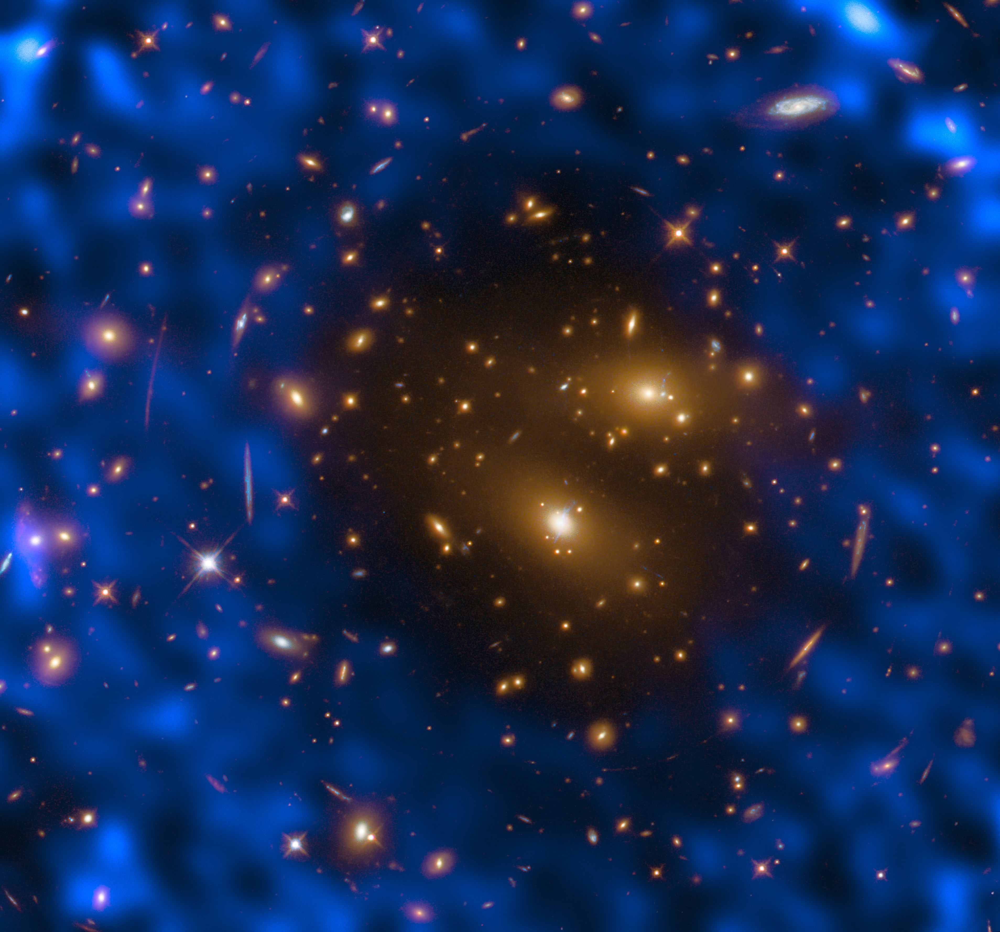

The Sunyaev–Zel’dovich (SZ) effect is a small but measurable distortion of the cosmic microwave background (CMB) spectrum caused by inverse Compton scattering of CMB photons off hot electrons in the intracluster medium of galaxy clusters. It was predicted in 1970 by Soviet astrophysicists Rashid Sunyaev and Yakov Zel’dovich and first detected in 1984.

ALMA (ESO/NAOJ/NRAO)/T. Kitayama (Toho University, Japan)/ESA/Hubble & NASA
As CMB photons pass through the hot, ionised gas that fills a galaxy cluster, roughly 1% of them scatter off free electrons at temperatures of 107–108 K. Each scattering gives the photon a small energy boost through inverse Compton scattering, shifting it from lower to higher frequencies. The net result is a deficit of CMB photons below about 217 GHz and an excess above it. This characteristic spectral signature, typically about 1 millikelvin, is described by the Compton y-parameter, which measures the integrated electron pressure along the line of sight.
Thermal and kinematic variants
The dominant form, the thermal SZ effect, arises from the random thermal motions of electrons in the intracluster medium. A second, weaker variant, the kinematic SZ effect (also called the kinetic SZ effect), is produced by the bulk motion of a cluster relative to the CMB rest frame. The kinematic effect is roughly ten times smaller and was first detected statistically in 2012.
Why it matters
The SZ effect does not fade with distance. A cluster at redshift 2 produces the same signal as an identical cluster nearby, because the distortion depends only on the cluster’s physical properties, not on how far away it is. This makes SZ surveys especially powerful for finding distant clusters. The South Pole Telescope confirmed 516 clusters across 2,500 square degrees, while the Atacama Cosmology Telescope catalogued over 10,000 in its sixth data release. By combining SZ data with X-ray observations, astronomers can also measure the Hubble constant independently of the traditional distance ladder. Cluster counts from SZ surveys constrain cosmological parameters such as the matter density and the amplitude of density fluctuations.